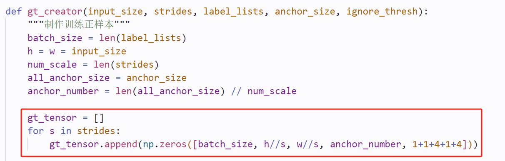

04 YOLOv3
YOLOv3
1.基本结构
作为one-stage、anchor-based的模型，YOLOv3包括3部分，分别是：BackBone、Neck、Head：
BackBone特征提取：使用了DarkNet53Neck多尺度融合：使用了FPNHead：利用多尺度的特征图进行多级检测
2.与先前YOLO的不同
2.1主干网络
YOLOv3的主干网络使用了DarkNet53，这是个比较小众的网络，在ImageNet数据集上，DarkNet53的top1准确率和top5准确率几乎与ResNet101和ResNet152持平，但==速度却显著高于后两者==。因此，相较于所对比的两个残差网络，DarkNet53在速度和精度上具有更高的性价比
2.2使用了FPN和多级检测
FPN的最早是在2017年的CVPR会议上提出的，其创新点在于提出了一种自底向上（bottom-up）的结构，融合多个不同尺度的特征图去进行目标预测。FPN工作认为网络浅层的特征图包含更多的细节信息，但语义信息较少，而深层的特征图则恰恰相反。原因之一便是卷积神经网络的降采样操作，降采样对小目标的损害显著大于大目标，直观的理解便是小目标的像素少于大目标，也就越难以经得住降采样操作的取舍，而大目标具有更多的像素，也就更容易引起网络的“关注”，在YOLOv1+和YOLOv2+的工作中我们也发现了，相较于小目标，大目标的检测结果要好很多。
随着网络深度的加深，降采样操作的增多，细节信息不断被破坏，致使小物体的检测效果逐渐变差，而大目标由于像素较多，仅靠网络的前几层还不足以使得网络能够认识到大物体（感受野不充分），但随着层数变多，网络的感受野逐渐增大，网络对大目标的认识越来越充分，检测效果自然会更好。于是，一个很简单的解决方案便应运而生：浅层网络负责检测较小的目标，深层网络负责检测较大的目标。考虑识别物体的类别依赖于语义信息，因此将深层网络的语义信息融合到浅层网络中去是个很自然的想法。
FPN工作的出发点便是如此，提出了一个行之有效的网络结构，如图4所示。其基本思想便是对深层网络输出的特征图使用上采样操作，然后与浅层网络进行融合，使得来自于不同尺度的细节信息和语义信息得到了==有效的融合==。
既然，FPN将不同尺度的特征图的信息进行了一次融合，那么一个很自然的方法也就应运而生：多级检测（multi-level detection）。最早，多级检测方法可以追溯到SSD网络，SSD正是使用不同大小的特征图来检测不同尺度的目标，这一方法的思想内核便是“分而治之”，即不同尺度的物体由不同尺度的特征图去做检测，而不是像YOLOv2那样，都堆在最后的C5特征图上去做检测。而FPN正是在这个基础上，让不同尺度的特征图先融合一遍，再去做检测。FPN的这一强大特性，使得它称为了“分而治之”检测方法的重要模块。也为后续许多的特征融合工作带去了启发，如PAN和BiFPN。
这里强调一下，“分而治之”方法的内核不是FPN，而是多级检测。FPN不过是锦上添花，即使我们不做特征融合，依旧可以做多级检测，如SSD。只是使用特征融合手段，可以让检测的效果更好罢了
3.模型细节
3.1代码怎么实现Anchor Base
原先的YOLOv1和v2都只在BackBone的最后一个输出特征(c5)进行后边的预测，而v3分别使用了多级特征图(c3,c4,c5)进行检测。那么作为一个Anchor Based模型，YOLOv3也许要针对特征图上的每一个grid生成锚框，具体它是如何生成的呢？
跟YOLO v2一样，网络只要输出指定形状的Tensor就行了，因为在后处理的过程中，会把对于每个Anchor的调整(tw,ty)应用到对应的Anchor上，然后计算损失。所以代码实现还是比较简单的。
3.2如何确定输出张量的维度
在每个特征图上，YOLOv3在每个网格处放置3个先验框。由于YOLOv3一共使用3个尺度，因此，YOLOv3一共设定了9个先验框，这9个先验框仍旧是使用kmeans聚类的方法获得的。在COCO上，这9个先验框的宽高分别是(10, 13)、(16, 30)、(33, 23)、(30, 61)、(62, 45)、(59, 119)、(116, 90)、(156, 198)、(373, 326)。注意，YOLOv3的先验框尺寸不同于YOLOv2，后者是除以了32，而前者是在原图尺寸上获得的，没有除以32。
每个尺度的网格都放置3个先验框，且每个先验框的预测仍旧是包括置信度、类别和位置参数（换言之，输出共包括objectness+class+bbox三部分输出），因此，每个尺度所预测的张量的通道数都是3×(1+C+4)。以416的输入尺寸为例，YOLOv3最终会输出52×52×3(1+C+4)、26×26×3(1+C+4)和13×13×3(1+C+4)三个预测张量，也就是生成3 * (52 * 52 + 26 * 26 + 13 * 13) = 10647个bbox。然后将这些预测结果汇总到一起，进行后处理，得到最终的检测结果。
4.模型训练
4.1训练用标签的制作
所有YOLO系列，难的都是这一部分
相比于YOLOv2，由于YOLOv3采用了多级检测，因此它的网络也会输出多级的预测结果(p5,p4,p3这3个Tensor)，因此在制作标签gt_tensor时：
(1)首先也需要定义3个不同尺度的张量。

(2)分别计算所有Anchor box与gt_box的IOU，根据情况确定正样本、负样本以及忽略样本，并对gt_tensor的对应位置进行填充
注意：由于YOLOv3是多尺度检测，所以在制作gt_tensor时，首先要通过跟gt_box的IOU最大的那个anchor box所在尺度确定要往哪个尺度的gt_tensor之中插入数据。
(3)对不同尺度的gt_tensor做一个拼接，然后返回
==最终用于训练的标签的维度应该是：[B, total_anchors, C]==
其中total_anchors是各个尺度上的GRID生成的Anchor box的总和
4.2损失函数计算
网络需要学习的参数包括：
由先验框到预测框，尺寸上需要调整的参数
预测框的类别
预测框包含物体的置信度(objectness)
但不是每个先验框都计算以上3个损失，应该根据该Anchor box属于正负样本情况来讨论。在训练时，对于正样本，需要训练全部预测的损失；而对于负样本，只计算置信度损失；忽略objectness=-1的样本。
5.正样本、正例、真例这三者有啥区别？
正样本：[训练前对anchors进行标注]与某个GT_bbox的IOU最大的那个anchor（一个真实bbox只有一个正样本），其objectness = 1
真例(True)：置信度大于设定阈值的bbox，即分类正确的bbox
正例(Positive)：与GT的IOU大于设定阈值（通常为0.5-0.95之间）的bbox，如果有多个bbox和同一个GT的IOU大于设定阈值，那么只有第一个为正例，其余的也全是负例(Negative)
假例(False)：分类错误的bbox
负例(Negative)：与GT的IOU小于设定阈值的bbox，或者大于阈值，但不是IOU最大的那个
6.Score是什么？
Score是预测框的得分，其计算公式为：该预测框包含物体的概率（Pobj）×该预测框为所属类别的概率
问题4：预测特征图的通道数及含义是什么？
以K个尺度为例，通道数 = K*(num_class + 1 + 4)，包含以下几部分：
K：每个方块生成的anchors的个数，一般K=尺度的个数
该bbox属于各类别的概率：num_class维
该bbox是正样本(objectness=1)的概率：1维
锚框——>预测框需要调整的尺寸(tx,ty,tw,th)，4维
7.什么时候用非极大值抑制
训练的时候不需要用非极大值抑制，每个grid都参与训练。只有预测时需要用。
8.模型预测
上面提到了YOLOV3会进行多尺度的预测，具体来讲，他在前馈计算时，会输出3个不同大小的特征图，这就代表了不同尺度的预测。目标检测和语义分割不同，语义分割中网络的前馈计算结果可能就是我们最终需要的结果，顶多再进行一个argmax操作。而目标检测的前馈计算的feature map的是个多通道的张量，我们还需要进一步的处理，把bbox，score等数据从各个通道中取出来，增加可读性。